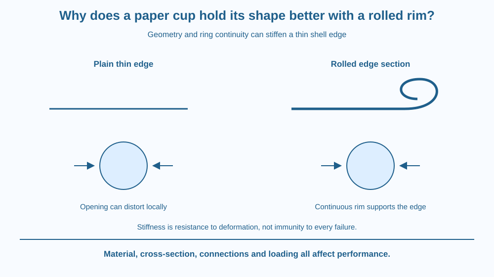

Explain how shaping a thin edge can change its resistance to deformation. Distinguish stiffness, strength and shell shape. Use a rolled paper-cup rim to connect geometry with local support, without assuming that the material's chemical composition must change.
A thin paper cup often has a rolled or thickened rim. The edge is not flat like the freshly cut edge of a simple paper cylinder. When gently squeezed, the rim can help the opening retain its shape.
Why would bending the same kind of material into a different section matter? A structure's response depends on how material is arranged relative to the loads, not only on what substance it contains.
The rim acts as part of a connected shell. Its benefit is therefore more than simply hiding a sharp-looking edge or adding decoration.
Stiffness describes resistance to deformation under a specified load. Strength concerns how much loading can be sustained before a relevant failure. A component can be relatively stiff without being strongest under every possible kind of load.
A paper cup is a thin shell. Its curved wall carries and redistributes forces differently from a flat sheet. The open edge is a location where the shell can be especially easy to distort if it has little local support.
A rolled rim creates a larger and more structured cross-section at that edge. Material is distributed through a deeper shape rather than remaining in one very thin flat strip. This can increase resistance to certain bending and distortion modes.
The ring-like arrangement also connects neighbouring parts of the opening. When one region is pressed, the rim can distribute some response around the circumference instead of allowing only a small unsupported patch to fold inward.
This does not make the cup infinitely rigid. A sufficiently large squeeze, a weak joint or a damaged rim can still change the opening's shape. Performance depends on geometry, material thickness, moisture, joints and the direction of loading.
Buckling is an instability in which a compressed structure changes shape markedly. Thin walls can buckle even when the material has not simply snapped into two pieces. A rim can help restrain some local modes but cannot prevent every possible instability in the entire cup.
Moisture can weaken or soften some paper structures, depending on coatings and composition. A wet cup and a dry cup are not a fair pure comparison of rim geometry. The state of the material must be controlled or at least recorded.
The lesson differs from rubber-band elasticity. A rolled rim demonstrates how geometry stiffens a thin shell against particular distortions; a rubber band demonstrates recoverable rearrangement of a flexible material network. Both involve forces, but their core explanatory targets are different.
Draw a thin flat strip in cross-section and then the same type of strip folded or rolled into a deeper shape. Put an equal gentle load arrow on each. The deeper section changes how bending can occur.
Next join the shaped edge into a ring. Press one point in your drawing and trace how neighbouring regions help resist the change. This adds circumferential support to the local section idea.
Finally cut a gap in the drawn ring. Predict how that interruption might alter support, while remembering that the exact response depends on the whole geometry. The model separates intact structure from the raw material's identity.
The SVG compares a plain thin edge with a rolled-rim cross-section. A top view shows a continuous ring around an opening and arrows for a gentle squeeze.
A separate damaged-rim example interrupts the ring and labels the resulting loss of continuity as a possible weakness. The illustration is qualitative; it does not claim a measured increase in force resistance.
The diagram distinguishes stiffness from strength and notes that loading direction matters. It is not a design specification for a commercial food container or a claim that every rolled edge performs identically when wet.

Rolled edges and shaped sections appear in many everyday objects, including containers and thin panels. The engineering principle is to arrange material so it resists the relevant deformation efficiently.
A corrugated sheet also uses shape to change response, although its geometry and loading differ from a cup rim. Recognising the shared design question does not mean the two structures have identical mechanics.
For a school project, a paper model can show the idea without crushing disposable cups or using hot liquid. The goal is to examine shape, not to test a container beyond its intended use or infer food safety from its stiffness.
Use two similar scrap-paper strips torn by hand and a little reusable tape if available. No scissors, sharp tools or hot drink is needed.
Your hand does not guarantee equal forces, and folding can change more than one geometric feature. Treat the result as qualitative. The strip comparison models cross-section effects; it does not reproduce a complete cup's curved shell or measure a commercial rim's strength.
Why is adding a shaped rim different from changing the paper into a chemically stronger material? Identify which property was deliberately altered in the structural model.
Now imagine the rim contains a gap or a crushed segment. Explain why continuity around the opening can matter even if the total amount of paper remains almost the same. Structure involves connections as well as material quantity.
What does stiffness describe?
Answer: A — Stiffness concerns how much a structure deforms under the relevant loading.
Why can a rolled rim help a thin opening keep its shape?
Answer: B — The shaped continuous edge can resist and redistribute particular distortions.
A dry rimmed cup is compared with a wet plain cup. What complicates the comparison?
Answer: C — Moisture can change paper response, so the test does not isolate rim shape alone.
Design a paper-container edge intended to resist gentle squeezing. Draw both its cross-section and its top view, then explain what each view reveals.
Include one limitation involving moisture, a joint or loading direction. Your proposal should distinguish a qualitative design argument from a measured strength claim. Do not use a person's body weight, heavy loads or a hot liquid to test your model.
A small amount of material placed in a useful shape can change a structure's response more than the same material left flat. The lesson is not that material properties are unimportant. It is that chemistry, geometry and connection all contribute, so judging a structure only by thickness or weight misses part of the design.
A rolled rim can stiffen a thin cup opening through cross-section shape and ring continuity; its performance still depends on material condition and loading.